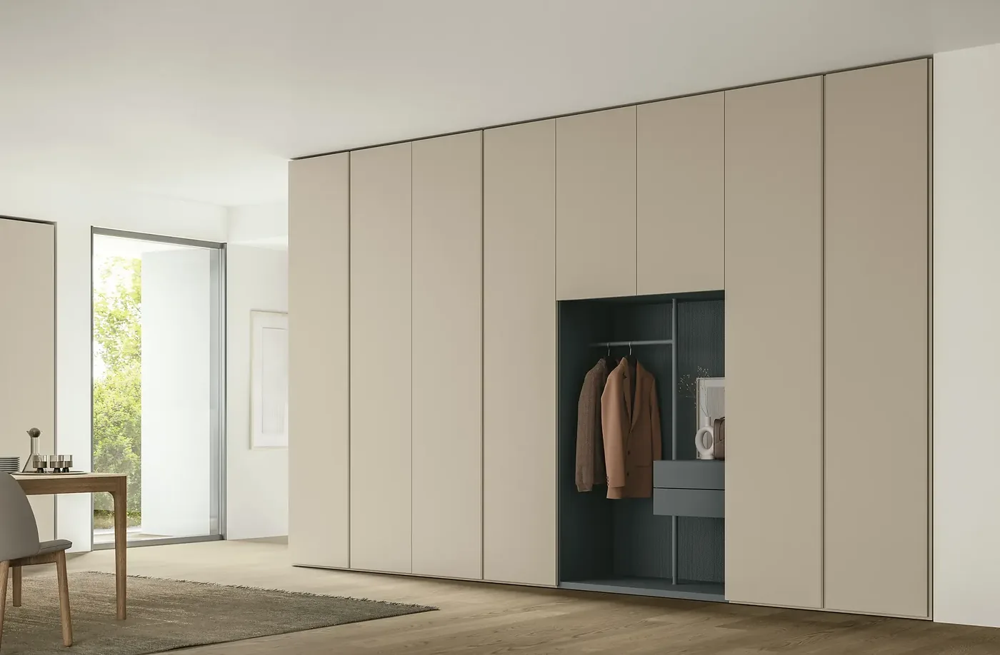
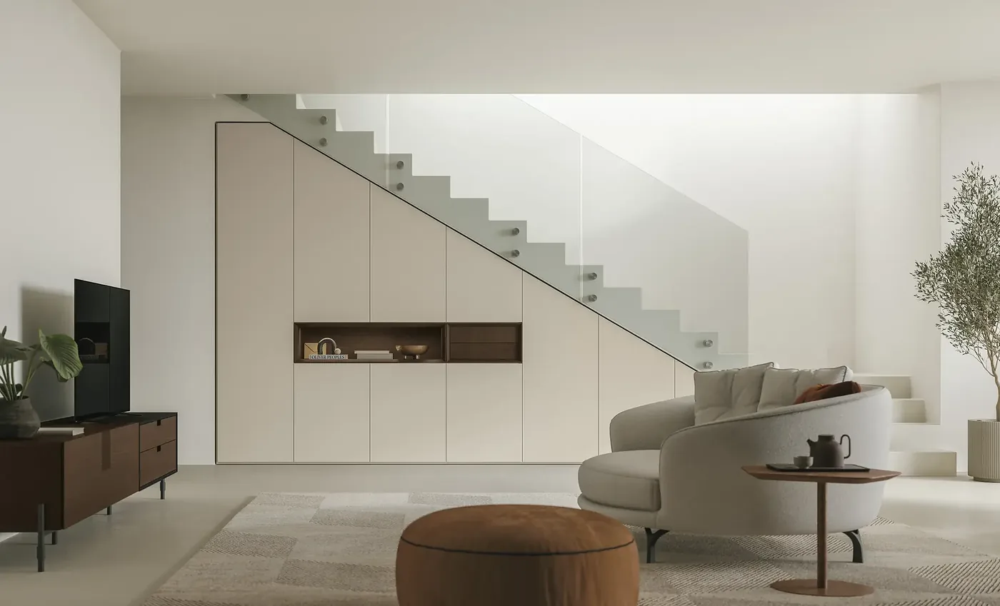
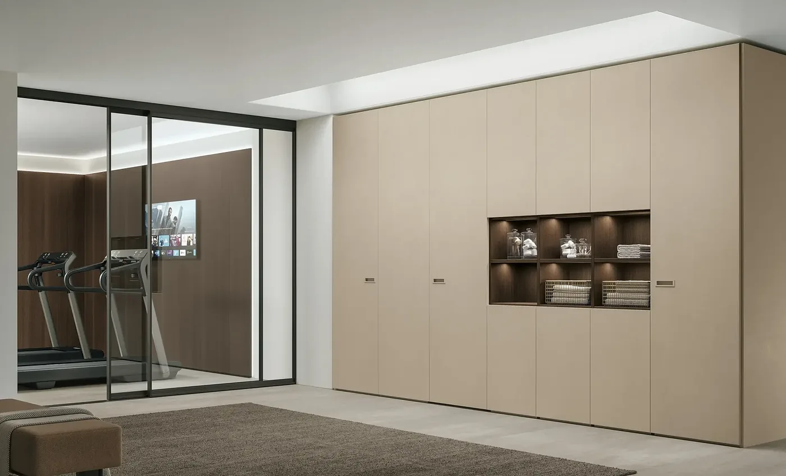
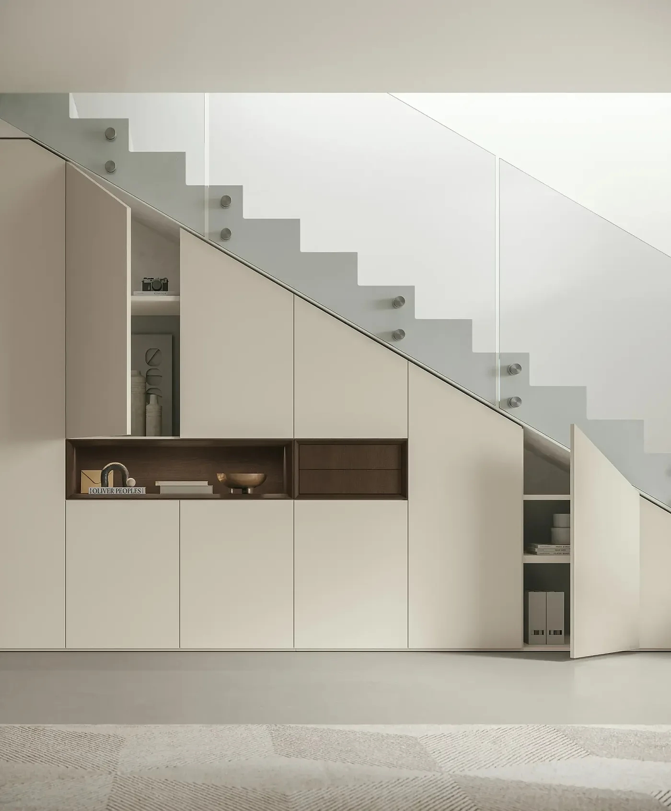
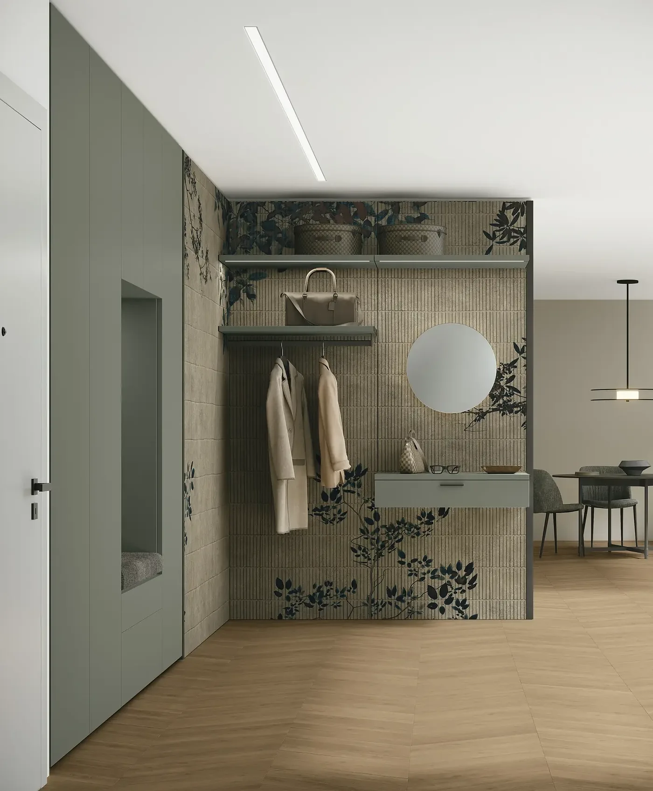
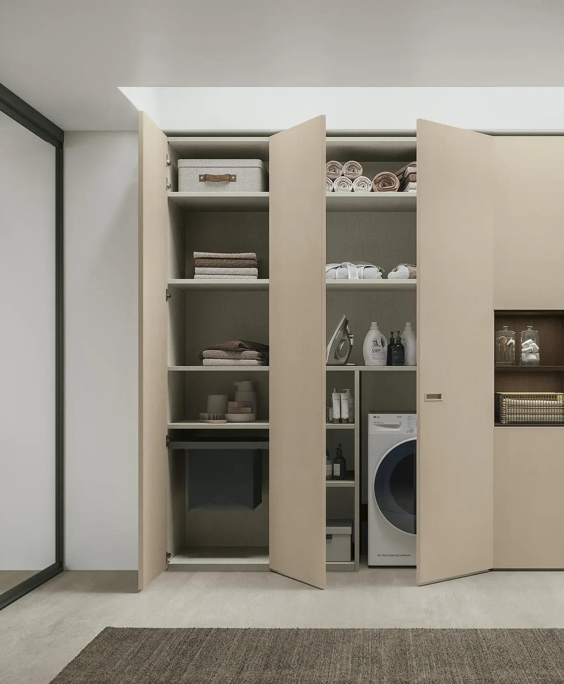
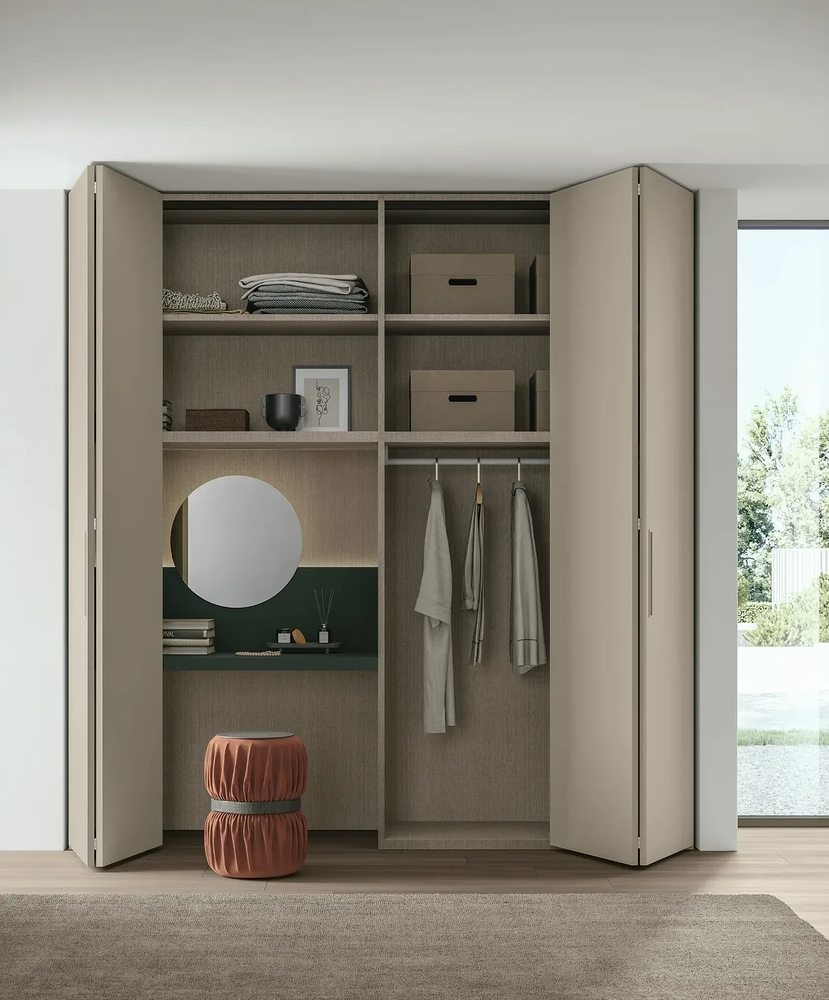

Rangements et aménagement
Rangements et dressings sur mesure.
Un dressing, une bibliothèque, un mur à repenser : imaginons-le ensemble, à vos mesures.
- Mesures chez vous si vous le souhaitez
- Projection 3D pour un aménagement
- Première visite et conseil offerts
Dans cet univers
Deux façons d’entrer.
-

Sur mesure – Voir le sur mesure
Dressings, bibliothèques et rangements adaptés à votre pièce.
-

Tomasella – Voir Tomasella
Séjour, dressing et chambre, composés module par module.



Sous l’escalier
La place perdue ne l’est plus.
Photo Tomasella.


Derrière les portes
Le mur garde tout pour lui.
Photo Tomasella.
À l’intérieur
Chaque chose a sa place.
-

Sous les marches
-

Le vestiaire
-

Le linge
-

La penderie
Données pratiques · Modules ou sur mesure
Par où commencer
Modules ou sur mesure : comment choisir.
Un mur à occuper, une garde-robe à organiser, un recoin où la place se perd ? Modules ou pièce unique : voici ce qui les distingue, et où les retrouver.
-
Un mur à composer
Les systèmes modulables Tomasella, fabriqués en Italie, se combinent pour s’ajuster à votre mur : armoires, dressings, compositions de séjour. Portes battantes ou coulissantes, dressing ouvert, compartiments : vous choisissez la façade et l’organisation intérieure selon ce que vous souhaitez ranger.
-
Une pente, un recoin
Quand les modules ne couvrent pas une pente ou un recoin, notre atelier partenaire en Belgique fabrique la pièce unique : formes atypiques, matériaux choisis avec vous. Notre page Sur mesure montre ce que nous réalisons : sous-pente, entrée et hall, dessous d’escalier.
-
Dans le séjour
Meuble TV, bibliothèque et buffet se composent module par module : l’écran, la box et les câbles trouvent leur place, les niches ouvertes mettent le reste en valeur. Ces compositions sont détaillées dans la rubrique Séjour ; le récit d’un séjour, dans nos réalisations, en montre une terminée.
-
Dans la chambre
Armoires et garde-robes s’accordent au lit et aux chevets, dans des finitions coordonnées selon les collections. Côté chambre, vous trouverez aussi les armoires à portes coulissantes Sinfonie, de Staud, dont la largeur, la hauteur et la profondeur se choisissent.
De la première visite à l’installation
Votre projet
De la première visite à l’installation.
-
Ce qu’il faut apporter
Les cotes du mur (largeur, hauteur et profondeur), une photo et une idée de ce que vous voulez ranger. Sans mesures, nous pouvons venir les relever chez vous, si vous le souhaitez.
-
Voir avant de commander
Nous préparons une projection 3D de votre aménagement : vous voyez les volumes, les façades et les teintes avant de décider. Les matières (bois, laques mates et décors) se comparent au magasin.
-
La livraison et l’installation
La livraison est assurée par nos soins, finitions comprises. Et vous pouvez assortir le sur mesure à vos meubles existants : nous partons de ce que vous avez déjà.
Vous êtes professionnel ? Nous aménageons aussi vos espaces : voyez l’espace pro. Pour le reste de la maison : l’espace de vie et l’espace nuit.
Parlons de votre pièce.
Apportez un plan ou quelques mesures, et une photo du mur. Nous dessinons la composition avec vous.
- Lundi
- 13h30 – 18h30
- Mardi au samedi
- 10h30 – 18h30
- Dimanche
- Fermé
- Téléphone
- 064 46 07 72
- Livraison
- Par nos soins, dans le Hainaut (Binche, La Louvière, Mons, Charleroi…) et la province de Namur
Nous livrons aussi dans le nord de la France. Ailleurs, dont Bruxelles : sur demande.